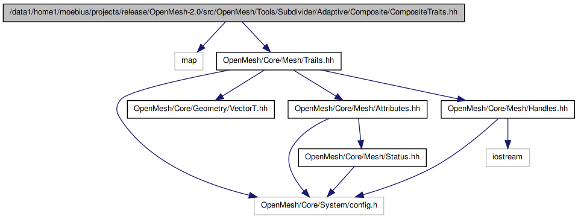

Mesh traits for adaptive composite subdivider. More...
#include <map>#include <OpenMesh/Core/Mesh/Traits.hh>
Include dependency graph for CompositeTraits.hh:

This graph shows which files directly or indirectly include this file:

Go to the source code of this file.
Classes | |
| struct | OpenMesh::Subdivider::Adaptive::CompositeTraits |
| Adaptive Composite Subdivision framework. More... | |
| struct | OpenMesh::Subdivider::Adaptive::CompositeTraits::State |
| Storage type for intermediate states and the final flag of a mesh entity. More... | |
| struct | OpenMesh::Subdivider::Adaptive::CompositeTraits::FaceT< Base, Refs > |
| struct | OpenMesh::Subdivider::Adaptive::CompositeTraits::EdgeT< Base, Refs > |
| struct | OpenMesh::Subdivider::Adaptive::CompositeTraits::VertexT< Base, Refs > |
Namespaces | |
| namespace | OpenMesh |
Contains all the mesh ingredients like the polygonal mesh, the triangle mesh, different mesh kernels and mesh traits. | |
| namespace | OpenMesh::Subdivider::Adaptive |
Software related to adaptive subdivision of meshes. | |
Typedefs | |
| typedef CompositeTraits::state_t | OpenMesh::Subdivider::Adaptive::state_t |
| Adaptive Composite Subdivision framework. | |
| typedef CompositeTraits::final_t | OpenMesh::Subdivider::Adaptive::final_t |
| typedef CompositeTraits::State | OpenMesh::Subdivider::Adaptive::State |
Detailed Description
Mesh traits for adaptive composite subdivider.